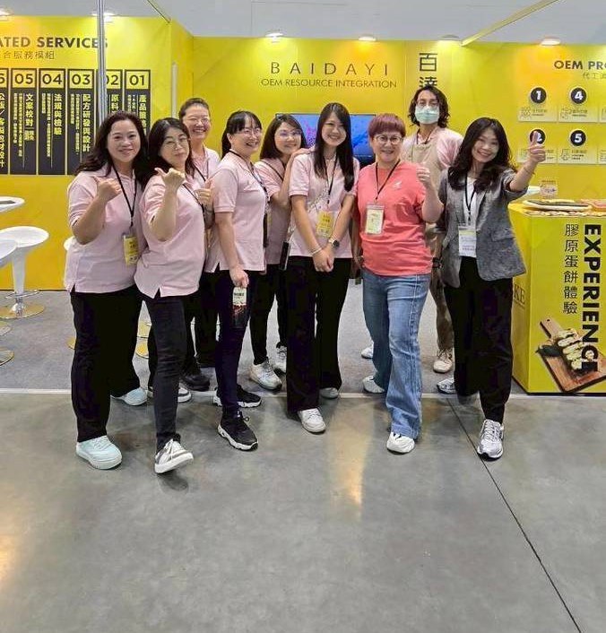

NEWS & INSIGHTS
用專業觀點，
看懂下一個市場。
從消費需求、原料應用到產品開發，提供品牌做決策時真正需要的資訊。

市場趨勢
腸腦軸是什麼？從腸道微生態到睡眠營養
解析益生菌、後生元與晚安營養的最新配方思維。

配方研發
鈣產品不只補鈣？看懂新一代鈣複方設計
從海藻鈣、CPP 到維生素 D 與 K2 的產品差異。

市場趨勢
女性微生態成為保健新品開發新方向
從益生菌、甘露糖到植物萃取，掌握女性保健開發重點。

市場趨勢
GLP-1 之後，保健市場如何重新理解營養？
從體重管理走向 GLP-1 友善營養的新產品機會。
供應觀察
魚油供應正在趨緊？下一波挑戰不只是價格
從全球原料供應變化，看產品策略與規格風險。

品牌動態
百達醫亮相 2026 亞洲美容生技大展
創新機能食品與 OEM／ODM 整合服務，與海內外買主交流。
製造觀點
保健食品代工常見錯誤，如何在前期避免？
從配方、規格到包裝，整理開發過程容易忽略的問題。
製造觀點
代工不只是給一個配方
真正完整的 ODM 服務，應如何整合研發、製造與上市需求。
TURN INSIGHT INTO PRODUCT
看到市場機會，
下一步是做對產品。
把你觀察到的客群需求告訴我們，一起評估配方、劑型與產品差異。
討論產品方向